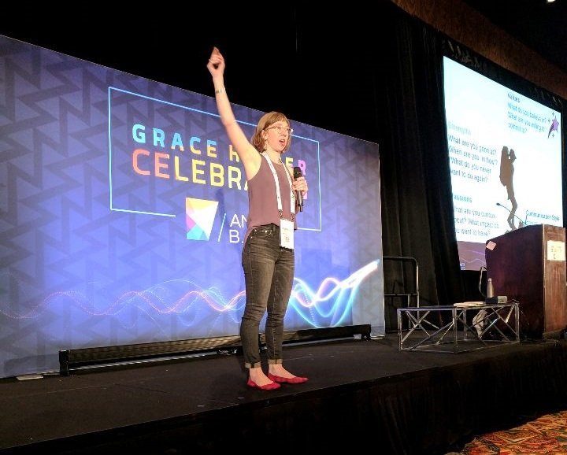

October 2, 2018

Going to the Grace Hopper Celebration was an experience that made me more proud to be a woman in the tech industry. I learned a lot about historical figures like, Grace Hopper or Ada Lovelace’s contributions to technology. I also learned that there were many similarities from my past classes to the speaker sessions that I attended.
As a Media and Information major, that is interested in Front-end Design and User Experience, I found that going to this conference brought up things I have learned in my CSE classes and my MI classes. At one of the speaker sessions, I learned about accessibility in the products people build and how there should be more of it. My biggest takeaway from the session was “Accessibility drives innovation.” I never thought about it that way but it makes sense to me. If someone was having a hard time doing something, there has to be someone else to step up and try to fix it. Companies need to try to put more effort into creating more accessible products and including people with accessibilities on their teams.
"Bringing the *Personal* Back to Branding" speaker, Rebecca Andersen
In my past Media and Information classes, I learned that an elevator pitch should be something that should be a conversation rather than just a statement that you say to introduce yourself. This was also something I listened to a speaker talk about at the conference about personal branding. I tried to do that as much as I could while I was at this conference at the career fair. It felt good to have an organic conversation instead of having a scripted line that I would just say. I can admit that for the first few encounters with companies that I had that elevator pitch line, but I always felt so stuck and awkward at the end of it. Having the conversation rather than a line just to say during the career fair was good practice.
I planned on going to the Grace Hopper Celebration to learn as much as I could and talk to as many companies as I could that intrigued me. It was a really good time to network with random people that were also standing in line waiting for the speaker sessions, and it was also surprising at some points to see that the people of my past were there too. I hope to keep on maintaining the new contacts that I have and continuing to try to make a difference in the tech industry by making the step to being in it. My biggest piece of advice to future people that go to Grace Hopper is to have a conversation with future companies and be proud that you are a woman in tech.